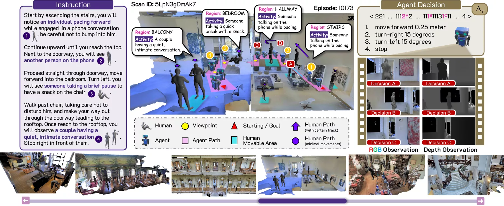
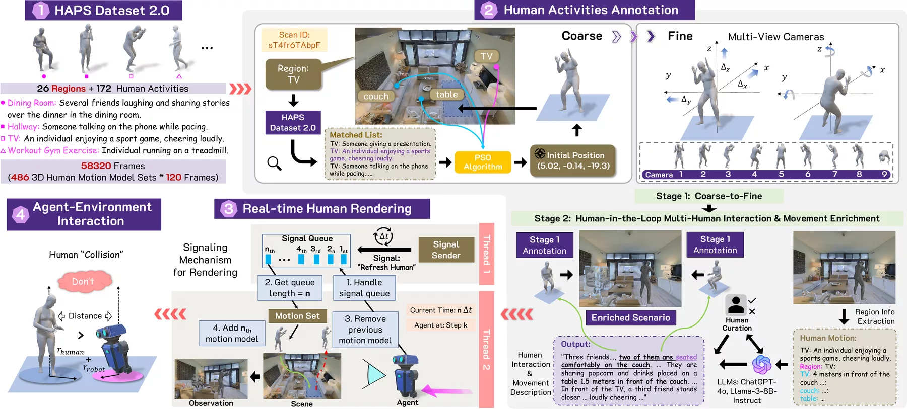

👋 Welcome to Track #2: HA-VLN of the RoboWorld Challenge 2026!
This track challenges participants to develop human-aware vision-and-language navigation agents that follow natural-language instructions safely, efficiently, and socially in dynamic human environments.
While many standard VLN benchmarks assume static scenes, real-world spaces are shared with moving people who serve as both semantic landmarks and dynamic obstacles. Built on HA-VLN 2.0, submissions must balance instruction following and social compliance under partial observability and real-time human interactions.
🏆 Prize Pool: $2,800 per track (1st: $1,500 · 2nd: $800 · 3rd: $500) + Rising Star Award
🌍 Challenge Overview
This track evaluates an embodied agent's ability to perform socially compliant instruction following in photorealistic 3D environments populated with dynamic human agents, without relying on static-world assumptions:
- Human-Referenced Grounding: Interpret fine-grained instructions that reference both scene landmarks and ongoing human activities.
- Social Norm Compliance: Respect personal space, proactively avoid human collisions, and navigate safely around moving bystanders.
- Realistic Benchmarking: Navigate indoor and outdoor areas with multi-human interactions in the HA-R2R and HAPS 2.0 datasets.
We welcome navigation policies, waypoint and topological planners, world models, and VLA approaches that advance safe, human-centered navigation in shared spaces.
🎯 Task Definition
| Component | Description |
|---|---|
| Input | Episode ID, initial position and yaw, navigation instruction, and released human-aware episode inputs. |
| Output | One ordered action sequence for each official episode ID. |
| Action Space | STOP, MOVE_FORWARD, TURN_LEFT, TURN_RIGHT, LOOK_UP, and LOOK_DOWN. |
| Setting | Continuous human-populated 3D environments; action sequences are replayed in the released HA-VLN 2.0 Habitat 0.1.7 runtime. |
See the participant README for the action-sequence format and optional local replay instructions.
📅 Competition Details
- Event: RoboWorld Challenge 2026, Track 2.
- Joint workshop: RoboPAD Workshop at NeurIPS 2026.
- Registration: register through the RoboWorld 2026 website for leaderboard and award eligibility.
- Submission platform: CodaBench — HA-VLN.
- Submission limits: five per day and 100 per phase; the best score is retained.
🏆 Awards
| Place | Award |
|---|---|
| 🥇 1st | $1,500 + certificate |
| 🥈 2nd | $800 + certificate |
| 🥉 3rd | $500 + certificate |
See the RoboWorld event site for Rising Star Award details.
🗂️ Phases
| Phase | Predictions | Leaderboard |
|---|---|---|
| Phase 1 | val_seen and val_unseen | Both reported; ranked by full-precision val_unseen Score. |
| Phase 2 | Held-out phase bundle | Final ranking and awards. |
Both phases use the same six-action JSON contract and Score. Results are not combined.
🗓️ Timeline
| Event | Date |
|---|---|
| Phase 1 opens | September 30, 2026, 16:00 UTC |
| Phase 1 deadline | October 31, 2026, 15:59 UTC |
| Phase 2 opens | November 2026; exact time to be confirmed |
| Phase 2 deadline | November 20, 2026; exact time to be confirmed |
| Awards | December 2026 |
Follow the competition page for any schedule updates.
📊 Dataset
The task combines HA-R2R route instructions with HAPS 2.0 human activity across indoor and outdoor areas of Matterport3D scenes. Matterport3D scenes require separate access under their own license.
HA-R2R contains 16,844 instructions across 90 scenes:
| HA-R2R split | Instructions |
|---|---|
| Train | 10,819 |
Validation Seen (val_seen) | 778 |
Validation Unseen (val_unseen) | 1,839 |
| Test | 3,408 |
| Total | 16,844 |
HAPS 2.0 provides 910 human models and 486 motion sequences of 120 frames each. Phase 1 submissions must cover all 778 val_seen and 1,839 val_unseen episodes; Phase 2 provides test inputs for final evaluation while reference trajectories and collision annotations remain withheld. Use the official episode manifests for identifiers; data preparation and simulator details are in the participant README.

🎬 Dataset Examples
These released HA-VLN 2.0 clips illustrate dynamic human activities and multi-human interactions in photorealistic scenes.
Multiple people in one scene
Several people share the same indoor scene, making the changing human context visible.
Phone pacing
A person walks while using a phone, creating a moving social cue.
Running and stopping
Faster motion and a sudden stop change the space available for navigation.
Released HA-VLN 2.0 media from the project page and code repository. Explore more scenes and activities on the HA-VLN 2.0 demo page.
🧠 CMA Baseline
We provide HA-VLN-CMA, a cross-modal attention navigation model from the released HA-VLN 2.0 project, as a reference baseline. Participants may use any method that exports legal action sequences. The original code, paper, and participant README provide implementation details and validation results.
📏 Evaluation
| Metric | Direction | Meaning |
|---|---|---|
| SR (Success Rate) | Higher | Collision-free navigation success rate. |
| NE (Navigation Error) | Lower | Mean final distance to the goal. |
| CR (Collision Rate) | Lower | Collision-episode rate, normalized by the human-influenced episode count. |
| TCR (Total Collision Rate) | Lower | Mean adjusted collision count per episode. |
🏁 Composite Score
Navigation = 0.80 × SR + 0.20 × 3 / (3 + NE)
Social = 0.75 × (1 − CR) + 0.25 × 1 / (1 + TCR)
Score = 100 × Navigation × (0.70 + 0.30 × Social)Higher full-precision Score ranks first. Ties use higher SR, lower NE, lower CR, lower TCR, then earlier submission time. See the participant README for metric definitions.
🔗 Contact and Resources
For technical questions, open an issue in the challenge repository. For competition inquiries, email roboworld2026@outlook.com.
| Resource | Link |
|---|---|
| Event and registration | RoboWorld 2026 |
| Starting kits, submissions, and leaderboard | CodaBench |
| Joint workshop | RoboPAD at NeurIPS 2026 |
| Challenge toolkit and instructions | GitHub repository |
| Released data | Hugging Face dataset |
| Docker runtime | Image and replay instructions |
| CMA checkpoint | Pretrained weights |
| HA-VLN 2.0 Get Started | Get Started guide |
| HA-VLN 2.0 media | Project page |
| HA-VLN 2.0 code | Source repository |
| Research paper | HA-VLN 2.0 |
For the complete data → CMA → action ZIP → submission workflow, follow the participant Quick Start.
❓ Frequently Asked Questions
1. Must I use CMA?
No. Any method may participate if it exports valid official action sequences.
2. What do I upload?
Only a ZIP containing the required JSON predictions. Awarded teams may later be asked for method, code, or model details to verify their results and contribute to a technical report.
3. Are look actions valid?
Yes. LOOK_UP and LOOK_DOWN are official actions and count toward the action budget.
4. Where are the datasets?
See the participant README. Request Matterport3D access through its official site.
5. Which replay determines my score?
Only the CodaBench replay of the submitted ZIP determines the official score. Local replay is for development.
6. What if my submission is rejected?
Use the format checker in the CodaBench starting kit and consult the Submission & Evaluation page for validation and scoring-log explanations.
📄 License and Terms
HA-VLN 2.0, HA-R2R, HAPS2.0, source media, pretrained weights, and Matterport3D retain their upstream licenses. Participation is governed by the Terms displayed on the official CodaBench competition.
📚 Citation
@misc{dong2026havln20openbenchmark,
title={HA-VLN 2.0: An Open Benchmark and Leaderboard for Human-Aware Navigation in Discrete and Continuous Environments with Dynamic Multi-Human Interactions},
author={Yifei Dong and Fengyi Wu and Qi He and Lingdong Kong and Heng Li and Minghan Li and Zebang Cheng and Yuxuan Zhou and Jingdong Sun and Qi Dai and Alexander G Hauptmann and Zhi-Qi Cheng},
year={2026},
eprint={2503.14229},
archivePrefix={arXiv},
primaryClass={cs.AI},
url={https://arxiv.org/abs/2503.14229}
}
@misc{roboworld2026track2,
title={Track 2 | HA-VLN: Human-Aware Vision-and-Language Navigation},
author={RoboWorld Challenge 2026 Organizers},
year={2026},
howpublished={https://f1y1113.github.io/havln-challenge/}
}